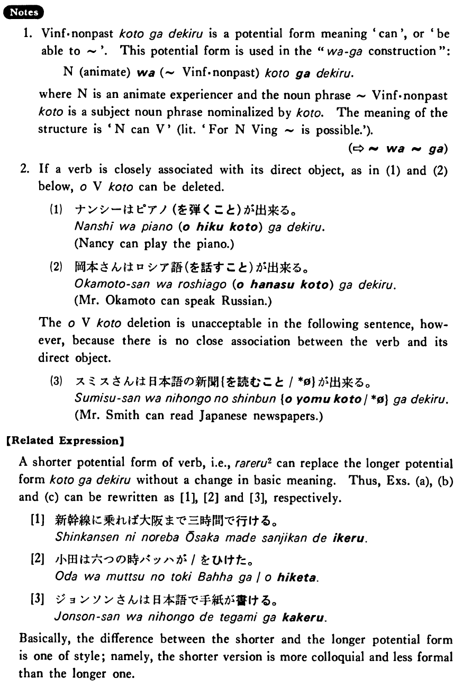

ことが出来る・できる (B. 200)
- (ks).
- 田口さんは中国語を話すことが出来る・出来ます。
- Mr. Taguchi can speak Chinese.
- (a).
- 新幹線に乗れば大阪まで三時間で行くことが出来る。
- If you take the bullet train, you can get to Osaka in three hours.
- (b).
- 小田さんは六つの時バッハを弾くことが出来た。
- Oda was able to play Bach at the age of six.
- (c).
- ジョンソンさんは日本語で手紙を書くことが出来る。
- Mr. Johnson can write letters in Japanese.
